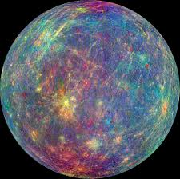

O sistema solar é um sistema planetário composto pelo Sol e todos os corpos celestes que orbitam em torno dele. O Sol é uma estrela, ela representa cerca de 99,85% da massa total do sistema solar. Os outros corpos celestes do sistema solar são os planetas, os planetas anões, os asteroides, os cometas e os meteoroides. Os planetas são corpos celestes grandes e esféricos que orbitam o Sol. Os planetas do sistema solar são: Mercúrio, Vênus, Terra, Marte, Júpiter, Saturno, Urano e Netuno.
Sol
- Curiosidades:
- Diâmetro equatorial: 1.391.016 quilômetros.
- Massa: 1,98892 x 10^30 quilogramas.
- 1 unidade astronômica, ou seja, 149.600.000 quilômetros
- Satélites naturais: 0, pois é uma estrela.
- Período de rotação: 25,45 dias terrestres
- A idade do Sol é estimada em cerca de 4,57 bilhões de anos
- O Sol foi formado a partir de uma nuvem de gás e poeira que colapsou sob a força da gravidade
Planeta Mercúrio
Mercúrio é o menor e mais interno planeta do Sistema Solar, orbitando o Sol a cada 87,969 dias terrestres. A sua órbita tem a maior excentricidade e o seu eixo apresenta a menor inclinação em relação ao plano da órbita dentre todos os planetas do Sistema Solar.
- Curiosidades:
- Diâmetro equatorial: 4.879 quilômetros.
- Massa: 3.302 × 10^23 quilogramas.
- Distância do Sol: 57,910.000 quilômetros.
- Satélites naturais: nenhum.
- Período de rotação: 58,65 dias terrestres.
- Período de translação: 224,7 dias terrestres.
Planeta Venus
Vênus é o segundo planeta a partir do Sol e o mais quente do Sistema Solar. Ele é um planeta rochoso, com uma superfície repleta de crateras, vulcões e planícies.
- Curiosidades:
- Diâmetro equatorial: 12.104 quilômetros.
- Massa: 4,868 × 10^24 quilogramas.
- Distância do Sol: 108.200.000 quilômetros.
- Satélites naturais: nenhum.
- Período de rotação: 243,02 dias terrestres.
- Período de translação: 224,7 dias terrestres.
Planeta Terra
A Terra é o terceiro planeta a partir do Sol e o único planeta do Sistema Solar conhecido por abrigar vida. É um planeta rochoso, com uma atmosfera composta principalmente de nitrogênio e oxigênio.
- Curiosidades:
- Diâmetro equatorial: 12.756 quilômetross.
- Massa: 5,9736 × 10^24 quilogramas.
- Distância do Sol: 149,6 milhões quilômetros.
- Satélites naturais: 1 (Lua).
- Período de rotação: 23 horas, 56 minutos e 4 segundos.
- Período de translação: 365,25 dias terrestres.
Planeta Marte

Marte é o quarto planeta a partir do Sol e o segundo menor planeta do Sistema Solar. É um planeta rochoso, com uma superfície repleta de crateras de impacto, vulcões e dunas de areia.
- Curiosidades:
- Diâmetro equatorial: 6.794 quilômetros.
- Massa: 6,42 × 10^23 kg quilogramas.
- Distância do Sol: 227,9 milhões de quilômetros.
- Satélites naturais: 2 (Phobos e Deimos).
- Período de rotação: 24,62 horas.
- Período de translação: 686,98 dias terrestres.
Planeta Jupter
Júpiter é o maior planeta do Sistema Solar, tanto em diâmetro quanto em massa. É o quinto planeta a partir do Sol e é um planeta gasoso, composto principalmente de hidrogênio e hélio.
- Curiosidades:
- Diâmetro equatorial: 142.984 quilômetros.
- Massa: 1,898 × 10^27 quilogramas.
- Distância do Sol: 778,5 milhões de quilômetros.
- Satélites naturais: 80+.
- Período de rotação: 9h 50m 28s.
- Período de translação: 11,86 anos terrestres.
Planeta Saturno
Saturno é o sexto planeta a partir do Sol e o segundo maior planeta do Sistema Solar. É um planeta gasoso, com uma atmosfera composta principalmente de hidrogênio e hélio.
- Curiosidades:
- Diâmetro equatorial: 116.464 quilômetros.
- Massa: 5,68319 × 10^26 quilogramas.
- Distância do Sol: 1,433 × 10^9 quilômetros.
- Satélites naturais: 82 (53 conhecidos e 29 em pesquisa).
- Período de rotação: 10,7 horass.
- Período de translação: 29,4 anos.
Planeta Urano
Urano é o sétimo planeta a partir do Sol e o terceiro maior planeta do Sistema Solar. É um planeta gasoso, com uma atmosfera composta principalmente de hidrogênio e hélio, com quantidades menores de metano e outros gases.
- Curiosidades:
- Diâmetro equatorial: 51.118 quilômetros.
- Massa: 8,686 × 10^25 quilogramas.
- Distância do Sol: 2,871 × 10^9 quilômetros.
- Satélites naturais: 27.
- Período de rotação: 0,718 dias.
- Período de translação: 84,01 anos.
Planeta Netuno

Netuno é o oitavo e mais distante planeta a partir do Sol, e o quarto maior planeta do Sistema Solar. É um planeta gasoso, com uma atmosfera composta principalmente de hidrogênio, hélio e metano.
- Curiosidades:
- Diâmetro equatorial: 49.244 quilômetros.
- Massa: 1,024 × 10^26 quilogramas.
- Distância do Sol: 4,445 bilhões quilômetros.
- Satélites naturais: 14.
- Período de rotação: 16 horas.
- Período de translação: 165 anos.